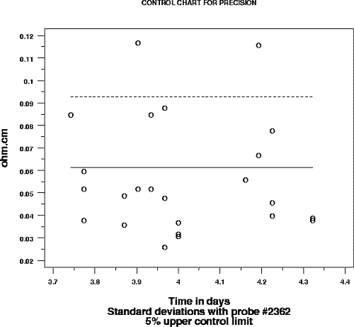

|
2.
Measurement Process Characterization
2.6. Case studies 2.6.2. Check standard for resistivity measurements
|
|||
| Control chart for probe #2362 showing violations of the control limits -- all standard deviations are based on 6 repetitions and the control limits are 95% limits |
 | ||